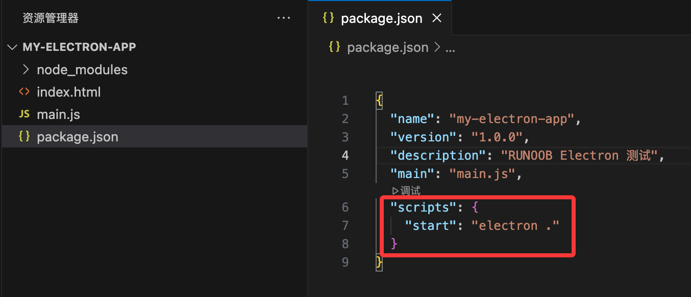

Electron installation
Before installing Electron, you need to prepare two basic environments:
1、Node.js
Electron is a framework based on Node.js, so Node.js must be installed first.
Check whether it is installed:
node -v npm -v
If a version number is output, it means it is installed.
If not, please go toNode.js official websiteDownloadLTS (Long-Term Support version)。
After installation, the system will automatically include npm (Node package manager).
If you are not familiar with Node.js, you can refer to:Node.js
Tutorial.2. npm or yarn
Installing Electron relies on npm or yarn for package management.
You can choose:
# 使用 npm npm install electron --save-dev # 或使用 yarn yarn add electron --dev
Install Electron
There are two ways to install Electron:Global installationandInstall within the project。
RecommendedInstall within the project(safer and easier to maintain).
1. Install within the project
# 创建一个项目文件夹 mkdir my-electron-app cd my-electron-app # 初始化 Node 项目 npm init -y # 安装 Electron npm install electron --save-dev
After successful installation, the following will appear in the project directory:
node_modules/ package.json package-lock.json
Verify whether the installation was successful
Create a simple Electron startup file:
main.js
Example
function createWindow() {
const win = new BrowserWindow({
width: 800,
height: 600,
})
win.loadFile('index.html')
}
app.whenReady().then(() => {
createWindow()
})
index.html
Example
<!DOCTYPE html>
<html>
<head>
<meta charset="utf-8">
<title>Runoob(runoob.com)</title>
</head>
<body>
<h1>Hello, Electron!</h1>
<p>RUNOOB Electron test.</p>
</body>
</html>
Then add a startup command in package.json:
"scripts": {
"start": "electron ."
}

Run:
npm start
If a desktop window pops up with "Hello, Electron!" written inside, it means the installation was successful/p>

Common installation problems and solutions
| Problem | Reason | Solution |
|---|---|---|
npm ERR! code ELIFECYCLE |
Permission or cache issue | Try to executenpm cache clean --force |
electron failed to install correctly |
Network or download source timeout | Install using the Taobao mirror (as follows) |
Use a domestic mirror to speed up installation
The Electron download package is very large (tens of MB) and may time out in China. You can use the Taobao mirror:
# 临时设置 ELECTRON_MIRROR=https://npmmirror.com/mirrors/electron/ npm install electron --save-dev
Or permanently change the npm source:
npm config set ELECTRON_MIRROR https://npmmirror.com/mirrors/electron/
Optional tools
| Tool name | Function | Installation command |
|---|---|---|
electron-builder |
Package into an installer (.exe / .dmg, etc.) | npm install electron-builder --save-dev |
electron-reload |
Automatically reload after modifying code | npm install electron-reload --save-dev |
electron-forge |
Quick build template | npx create-electron-app my-app |